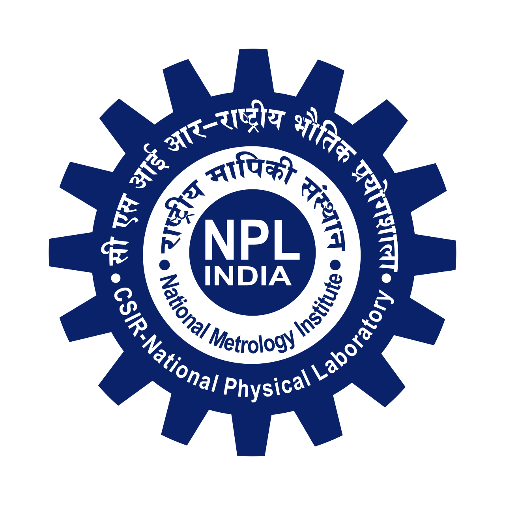

Amit Kumar
Postdoctoral Researcher
Bioinspired Soft Robotics Group
Istituto Italiano di Tecnologia, Genoa, Italy
Email: amit.kumar@iit.it
CV | Google Scholar | ORCID | LinkedIn

A postdoctoral researcher with expertise in developing biomimetic, responsive soft materials for biomedical, environmental, and soft-robotics applications. Skilled in interdisciplinary collaboration, advanced material characterization, and translational research. Dedicated to advancing technologies at the interface of adaptive robotics and biomedical science.
Education
DOCTOR OF PHILOSOPHY (Ph.D.) + MASTER OF SCIENCE (M.S.)July 2017 - July 2024 | CGPA: 9.75
Dual Degree Interdisciplinary Research Program Thesis: Harnessing Solvent-Responsive Actuation Behavior of Polymers for Biomedical Applications Supervisors: Prof. Nitish R. Mahapatra (Biotechnology), Prof. Pijush Ghosh (Applied Mechanics & Biomedical Engineering) |
|
BACHELOR OF TECHNOLOGY (B.Tech.)Aug 2013 - May 2017 | CPI: 70.42
Department of Biotechnology Major Project: Review Report on Biosensors for Detection of Plant Toxins Supervisor: Prof. B. D. Malhotra |
|
Research Experience
POSTDOCTORAL RESEARCHERJune 2025 - Present
Bioinspired Soft Robotics (BSR) Group Mentor: Prof. Barbara Mazzolai (Director, BSR, IIT, Genoa, Italy) |
|
RESEARCH ASSOCIATESept 2024 - Feb 2025
Nanomechanics & Nanomaterial Lab Mentor: Prof. Pijush Ghosh (Applied Mechanics & Biomedical Engineering, IIT Madras, Chennai, India) |
|
INDUSTRIAL TRAINEEJune 2016 - Aug 2016
Biomolecular Electronics and Conducting Polymer Research Group Mentor: Dr. G. Sumana Gajjala (NPL, CSIR, India), |
 |
INDUSTRIAL TRAINEEDec 2015 - Jan 2016
Department of Nuclear Medicine Mentor: Dr. Aseem Bhatnagar (INMAS, DRDO, Delhi, India) |
Research Themes
The ultimate goal of my research is to develop adaptive material technologies that address challenges in healthcare and sustainable agriculture. In healthcare, I design responsive drug delivery systems, anti-fouling medical surfaces, and active implantable devices that dynamically interact with biological environments to improve therapeutic outcomes. In agriculture and environmental applications, I develop environmentally powered soft robotic systems capable of autonomous sensing, actuation, and targeted release of bioactive compounds in response to soil conditions. By bridging materials science, biology, and robotics, my work aims to create sustainable technologies that enhance human health while supporting resilient environmental ecosystems.

Functional Materials
My research focuses on the design and engineering of functional soft materials that can sense, adapt, and respond to environmental stimuli. I develop hydrogel-, elastomer-, and nanoparticle-based systems with programmable physicochemical properties for applications in healthcare, robotics, and environmental monitoring. By integrating stimuli-responsive polymers with functional nanomaterials, I create adaptive materials capable of controlled actuation, shape transformation, sensing, and molecular release. These materials serve as the foundation for next-generation biointegrated devices, soft robotic systems, and sustainable technologies that operate autonomously in complex environments.
Interface Polymer Chemistry
Understanding and controlling material interfaces is central to my research. I employ advanced polymer chemistry approaches, including covalent and supramolecular crosslinking, bilayer architectures, and nanoparticle self-assembly, to engineer dynamic material systems with tailored mechanical and responsive behaviors. Through precise manipulation of interfacial interactions, I develop programmable structures capable of reversible shape morphing, directional actuation, and controlled transport of molecules. These studies provide fundamental insights into adaptive material behavior while enabling innovative solutions for biomedical devices, anti-fouling surfaces, and responsive soft machines.


3D/4D Printing of Soft Materials
I utilize advanced manufacturing strategies to translate responsive material concepts into functional three-dimensional architectures. My work combines Direct Ink Writing (DIW) of hydrogel-based formulations, bath-assisted printing of elastomeric systems, and molding techniques to fabricate complex soft structures with embedded functionality. By integrating stimuli-responsive behavior into printed materials, I develop four-dimensional (4D) systems capable of undergoing programmable shape transformations over time. These manufacturing approaches enable scalable production of adaptive biomaterials, soft robotic components, and smart devices with precisely controlled geometries and performance.

Programmable 4D-Printed Soft Actuators: Harnessing Bending Strain Distribution for Embedded Topological Functionality
ACS Applied Engineering Materials, 2025
Programmable 4D-Printed Soft Actuators: Harnessing Bending Strain Distribution for Embedded Topological Functionality
ACS Applied Engineering Materials, 2025
Programmable 4D-Printed Soft Actuators: Harnessing Bending Strain Distribution for Embedded Topological Functionality
ACS Applied Engineering Materials, 2025
Programmable 4D-Printed Soft Actuators: Harnessing Bending Strain Distribution for Embedded Topological Functionality
ACS Applied Engineering Materials, 2025
Programmable 4D-Printed Soft Actuators: Harnessing Bending Strain Distribution for Embedded Topological Functionality
ACS Applied Engineering Materials, 2025
Programmable 4D-Printed Soft Actuators: Harnessing Bending Strain Distribution for Embedded Topological Functionality
ACS Applied Engineering Materials, 2025
Awards & Grants
- MARIE CURIE POSTDOCTORAL FELLOWSHIP – SEAL OF EXCELLENCE 2026
- RESEARCH EXCELLENCE AWARD – IIT MADRAS 2024
- INSTITUTE RESEARCH AWARD – IIT MADRAS 2024
- FIRST PRIZE – SCI-TECH EXPOSIUM IIT MADRAS 2024
- GATE – INDIA 2017
Workshop Organizer
IEEE RAS ROBOSOFT 2026, Kanazawa, Japan – Functional and Untethered Soft Machines
Teaching Experience
- TA – Genetic Engineering Lab, IIT Madras
- TA – Microbiology Lab, IIT Madras
Referees
- Prof. Barbara Mazzolai – IIT Italy – barbara.mazzolai@iit.it
- Prof. Nitish Mahapatra – IIT Madras – nmahapatra@iitm.ac.in
- Prof. Pijush Ghosh – IIT Madras – pijush@iitm.ac.in
- Dr. Nidhi Gupta – India – nidhiophthal@gmail.com